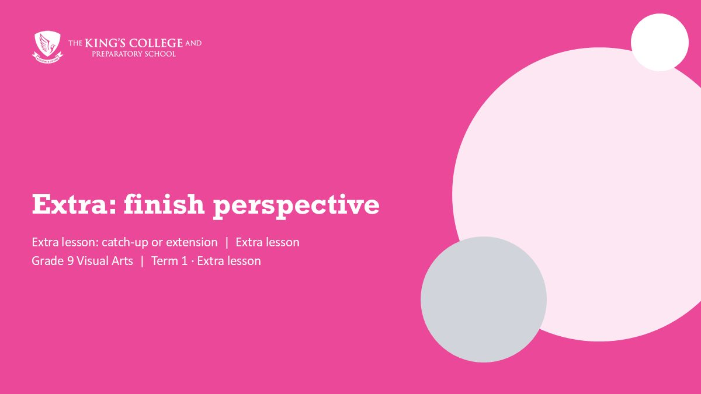

Term 1 · Extra lesson · Extra lesson: catch-up
Extra: grid or perspective catch-up
Start here
Today I will
- Finish my grid or perspective drawing
- Check my work against the success criteria
- Extend my perspective scene if I am done
Think first
What is the one thing that would make your drawing look more finished?
Words to know
- Vanishing point
- The point on the horizon where receding lines meet.
- Value range
- All the values from white to black.
- Foreshortening
- Something pointing towards you looks shorter and wider.
- Extension
- Taking a finished piece further with extra detail or a new idea.
Slides

Notes
Finish the grid or perspective drawing, or extend the perspective scene.
Finish or extend
- Finish the grid drawing: Full value range, grid lines gone, highlights kept.
- Finish the perspective drawing: All receding lines to the VP, construction lines erased.
- Extend: add detail: Floor tiles, shelves, books or people in your scene.
- Extend: two rooms: Draw an open door showing a second room behind it.
Remember
Finished is better than perfect, but careful is better than rushed.
Practical
You need: Pencils, ruler, eraser, unfinished drawings
Catch-up or extension
- Work on your target from the sticky note.
- Check your drawing against the checklist on the board.
- If you are finished, choose an extension idea.
- Hand in finished drawings with your name on the back.
Test yourself
- What did you improve today?
- Which line in perspective is never drawn at an angle?
- How do you draw floor tiles in one-point perspective?
Show answers
1. Own answer. 2. Horizontal and vertical lines stay horizontal and vertical. 3. Mark equal spaces on the front edge, join them to the VP, then add horizontal lines that get closer together towards the back.
Finished early?
Perspective floor tiles
Add a tiled floor to a perspective drawing.
- Draw a horizon line, VP and the front edge of a floor in your VJ.
- Mark equal spaces along the front edge and join each mark to the VP.
- Add horizontal lines that get closer together towards the back.
- Shade every second tile to make a checkerboard.